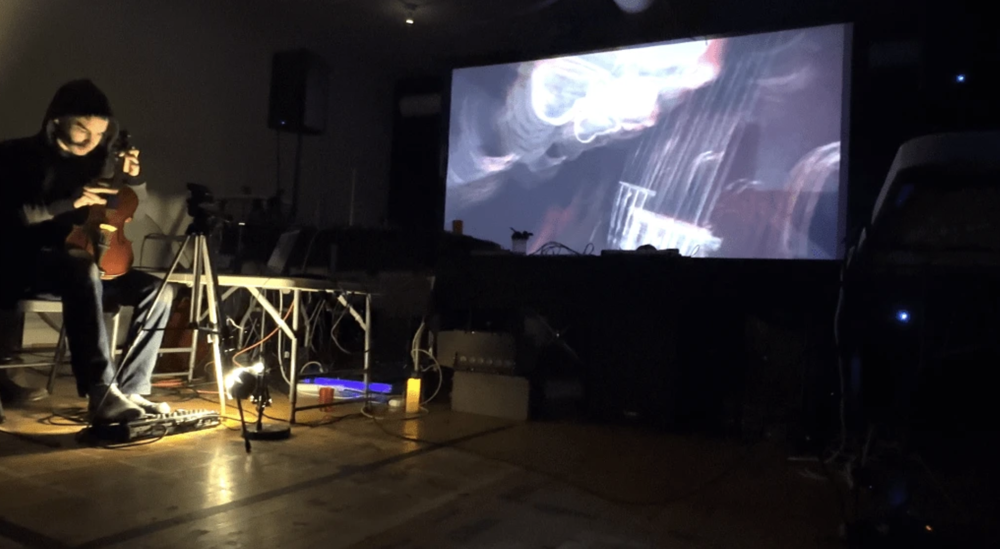
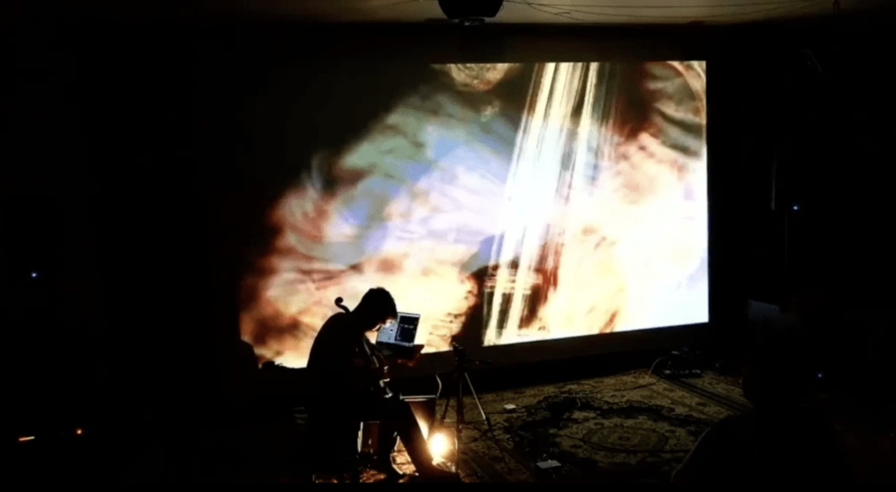

In December 2016, I performed an improvised solo set at the University of California, Berkeley using my viola, a motion sensor on my bow arm streaming data to a MaxMSP patch, and a MIDI pedal controller. This was one of my first improvised solo public performances.
Since that time, I’ve done many projects for various combinations of musicians, movement artists, electronics, and visuals. My artistic practice continued to change, and in 2022, the time came to revisit the solo format with a different perspective.
Performative Focus: Mediation Devices as Performance Objects
I had already been thinking about the question of performative focus - that is, the psychological state of the performer as perceived by the audience. I’ve discussed this in earlier writings, but I can briefly touch on it here:
I’m not a big fan of music stands; I don’t really like it when musicians read music during performances. There’s something mystical about embodied performance. We see it during dance, improvisation, and most pop/folk music performances. I understand the utility of using a score, but I think it leads to uninspiring stage presence and limits the potential for transformational visceral moments.
In the world of electronic music, the equivalent for music stands are computer screens. It’s an opaque mediation between the performer and the sound. If you’re going to put yourself on stage in front of everyone, and your performance is you looking at your computer screen, you might as well just sit in the back of the house to signal to the audience that they should only focus on the sound. For musicians who are using tactile interfaces (instruments, turntables, hardware synths, physical control interfaces), I think it’s good practice to limit your screentime, if there is indeed a screen.
There are rare exceptions. Qiujiang Levi Lu does great work using their computer as an object. Their live performance is visceral. While we normally see computers as a tool that shouldn’t be dropped or exposed to moisture, Lu’s work with the object enters a more uncanny space. Take a look around the 7:46 mark.
How does this translate to my solo performance work? Where should the audience’s focus be during my performance? If I was going to play viola and show projections in a dark room, I wanted the audience to focus mainly on the projections with secondary attention on my body. I needed to make a system that could facilitate sound and visuals without me touching or looking at it too much.
Instrument Position, Body, Posture, and Gaze
Considering my body, how would I posture myself? In the months before I started working on this project, I had been doing improvisation sessions with my viola in the “cello” position. This changes everything about the body’s relationship with the instrument. You don’t have to hold the instrument against your collarbone and you have more possibilities with percussive techniques. Personally, this posture breaks me out of my sonic comfort zone and I’m more able to explore different musical directions and movements.
Sitting down with my instrument, I decided that I would angle myself 90-degrees from the audience rather than facing them head-on, figuring this would signal that the primary focus shouldn’t be me. I didn't want to look at the audience, nor did I want the audience looking at my face. Thus, I would hold the viola in my lap, and I would capture the image of the instrument squarely with a webcam in front of me aimed at my torso, which brings the question:
Why Projections?
I struggled with this for a while. How could projections elevate a performance while not feeling like an iTunes visualizer? My rationale for having projections was that I wanted the audience to focus on something other than my body; I didn’t want the audience looking at me for 25 minutes. I’m too shy for that, and this question is something I’ll talk about in a future post.
For the projections themselves, I wanted a visual that would focus on the instrument and my fingers, but I didn’t want something that would feel super intimate. I didn’t want my skin on a big screen, but maybe a distorted version of it. How could I amplify my body visually without feeling exposed?
At the time, I was creating projections using the software Isadora. I had bad memories from using Jitter after the computer crash I had on stage at Gaudeamus in 2019, and Isadora was reportedly a bit more stable and easy-to-use. I started experimenting, building presets that would take the image of my viola and distort it using the data from the sounds coming from the instrument. That data would control parameters that would transform the image with visual noise, colors, and feedback.
Photo credit: Ricardo Adame


A Sophisticated Toy?
In the end, I coded an instrument, but not a performance. I had my viola, with a contact mic going into my pedal board, a nice MaxMSP patch to generate electronic sound, and a good Isadora session for the projections. Honestly, it’s just a sophisticated toy. There’s still the question of framing. Dramaturgy and theater. Should a performer simply walk on stage, play music, and leave? Or is there something more? Are the projections always on? How does it end?
I’ll answer these questions, along with a deep dive into the technical aspects, in the next entry.